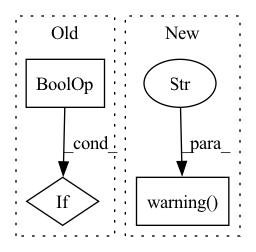

Pattern ID :37467
Before Change
secret_manager = Client().active_stack.secrets_manager
if not secret_manager or not isinstance(
secret_manager, BaseSecretsManager
) :
raise RuntimeError(
f"The active stack doesn"t have a secret manager component. "
f"The ZenML secret specified in the Seldon Core Model "After Change
// create a Kubernetes secret from that
if self.config.secret:
logger.warning(
"Your Seldon Core model deployer is configured to use a "
"ZenML secret that holds credentials needed to access the "
"artifact store. The recommended authentication method is to "
"configure credentials for the artifact store stack component "
"instead. The Seldon Core model deployer will use those "
"credentials to authenticate to the artifact store "
"automatically."
)
try:
zenml_secret = Client().get_secret_by_name_and_scope(
name=self.config.secret,In pattern: SUPERPATTERN
Frequency: 3
Non-data size: 3
Instances Fragment ID: 107975246
Project Name: maiot-io/zenml
Commit Name: f55a72942a5ca6009c26bdd6dd6dd13efa70e626
Time: 2023-03-16
Author: stefan@zenml.io
File Name: src/zenml/integrations/seldon/model_deployers/seldon_model_deployer.py
M Class Name: SeldonModelDeployer
N Class Name: SeldonModelDeployer
M Method Name: _create_or_update_kubernetes_secret(1)
N Method Name: _create_or_update_kubernetes_secret(1)
M Parent Class: BaseModelDeployer
N Parent Class: BaseModelDeployer
M File Name: src/zenml/integrations/seldon/model_deployers/seldon_model_deployer.py
N File Name: src/zenml/integrations/seldon/model_deployers/seldon_model_deployer.py
M Start Line: 183
M End Line: 210
N Start Line: 193
N End Line: 250
Before Change
relations_already_inverted = cls._check_already_inverted_relations(unique_relations)
// TODO: invert triples id-based
if create_inverse_triples or relations_already_inverted :
create_inverse_triples = True
if relations_already_inverted:
logger.info(After Change
unique_relations, inverse = np.unique(triples[:, 1], return_inverse=True)
suspected_to_be_inverse_relations = {r for r in unique_relations if r.endswith(INVERSE_SUFFIX)}
if len(suspected_to_be_inverse_relations) > 0:
logger.warning(
f"Some triples already have the inverse relation suffix {INVERSE_SUFFIX}. "
f"Re-creating inverse triples to ensure consistency. You may disable this behaviour by passing "
f"filter_out_candidate_inverse_relations=False" ,
)
relation_ids_to_remove = [
i
for i, r in enumerate(unique_relations.tolist())
if r in suspected_to_be_inverse_relations Fragment ID: 107975243
Project Name: pykeen/pykeen
Commit Name: a007a273ff146107fd1b0c099d561c7b7279965a
Time: 2020-12-10
Author: berrendorf@dbs.ifi.lmu.de
File Name: src/pykeen/triples/triples_factory.py
M Class Name: TriplesFactory
N Class Name: TriplesFactory
M Method Name: from_labeled_triples(7)
N Method Name: from_labeled_triples(6)
M Parent Class:
N Parent Class:
M File Name: src/pykeen/triples/triples_factory.py
N File Name: src/pykeen/triples/triples_factory.py
M Start Line: 169
M End Line: 222
N Start Line: 269
N End Line: 319
Before Change
// cfg.federate.sample_client_num = cfg.federate.sample_client_num
// (b) non-sampling case, use all clients
if not (sample_client_rate_valid or sample_client_num_valid) :
cfg.federate.sample_client_num = cfg.federate.client_num
if cfg.federate.use_ss:After Change
)
if cfg.federate.make_global_eval:
cfg.federate.make_global_eval = False
logger.warning(
"In global training mode, we will conduct global evaluation in a proxy client rather than the server. The configuration cfg.federate.make_global_eval will be False."
)
if non_sample_case or not sample_cfg_valid:
// (a) use all clients
cfg.federate.sample_client_num = cfg.federate.client_num Fragment ID: 107975249
Project Name: alibaba/federatedscope
Commit Name: c4d873f79e961067dd727cf4f45397ff30cd3439
Time: 2022-04-29
Author: daoyuanchen.cdy@alibaba-inc.com
File Name: federatedscope/core/configs/cfg_fl_setting.py
M Class Name: AnonimousClass
N Class Name: AnonimousClass
M Method Name: assert_fl_setting_cfg(1)
N Method Name: assert_fl_setting_cfg(1)
M Parent Class:
N Parent Class:
M File Name: federatedscope/core/configs/cfg_fl_setting.py
N File Name: federatedscope/core/configs/cfg_fl_setting.py
M Start Line: 80
M End Line: 110
N Start Line: 80
N End Line: 104